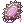

Mom
Jump to navigation
Jump to search
Overview
Mom, along with Pepper, her fluffy and trustful cat, are two custom characters created for NovaRO by the staff to help players new in the server.
She lives in Prontera and you get to know her as soon as you enter in the game and create a new character and don't skip the tutorial.
Sometimes she also appears in seasonal events, like the Summer island.
She can be found inside her home in Prontera or by using the Warper NPC > Special Areas > Home.
Tutorial
Mom will help new players with a quest around her house and other important places where you learn the basics about Ragnarok Online and find out about what this Server has to offer to new players.
- Create a new char and click Play.
- A pop up will appear. Select Wake up from a dream to start the tutorial.
- You will be on your bed and Mom will appear.
- You were supposed to be up one hour ago to become an adventurer but, unfortunately, you overslept.
- Mom will ask you to gather your things because you still need to help her before going out.
- - The server will now introduce you about how to move your character in the game.
- - Click somewhere with the left-click of your mouse to move the character.
- Walk towards where Mom is. She will ask you to hurry up and get your things from the chest.
- - The server will now introduce you to NPCs. As an example, click at the chest NPC to gather your trusty dagger,
 Novice Main Gauche [3].
Novice Main Gauche [3].
- After getting your dagger, Mom will tell you to not forget to get your suit from the closet.
- - The server will now you introduce you to 'camera rotation and zoom in and out.
- - Hold down your right-click and move your mouse to rotate.
- - To zoom in use the scroll of your mouse.
- Rotate the camera until you see the closet on your right. Click where you see a balloon saying Closet.
- - The server will now introduce you to How to equip/unequip gear.
- - Open your inventory by pressing ALT+E.
- - Click on the Equipments tab (E).
- - Double-click on
 Novice Adventurer's Suit [1] to equip it. The same can be done with any other equippable item.
Novice Adventurer's Suit [1] to equip it. The same can be done with any other equippable item. - - You can also check the properties of it, or any other item, by right click it.
- Mom will now ask you to equip your dagger and suit. She will also warn you to remember to grab your potions.
- - There are some at the left of your closet in a chest full of them but we're not talking about those. That's just an extra.
- After equipping them, you will follow Mom to the chest with your potions.
- After reaching the chest with them, you will get 50 Novice Potion.
- - The server will now teach you about how to add/bind items, skills, or any other equipment to the hotkeys.
- - You can do this by drag and drop any usable skills, equippable equipment, or usable consumable to the 4 rows of hotkeys visible on your screen.
- - If for some reason you don't have them, press F12 on your keyboard to display one or more rows of hotkeys.
- - If you just have one visible, more presses of F12 add up to 3 rows of hotkeys. A fifth press will make them all disappear.
- - There is an extra line of 4 rows of hotkeys that can be swapped to when needed by pressing ALT+F.
- - You can also change the shortcuts by pressing ESC -> BM/Shortcut Settings at any time.
- - You can try now to bind the potions to F1, the top left slot of your first hotkey bar.
- Mom will now wait for you downstairs. Proceed when ready (you can explore your room a bit more now if you want).
- After leaving the room, you will see displayed a bunch of arrows on the ground. Mom is at the kitchen and since the house may look big for a new player, you need to know where to go.
- If you don't want to explore Mom's house(you can still do it later), follow the arrows to the kitchen where Mom awaits you.
- After finding Mom, talk to her. She will tell you that you can't rely on her to wake you up every morning. She will also tell you that the basement is a mess and needs to be taken care. She would send Pepper but he already had his meal.
- Follow the arrows and go to the basement. You will now learn about combat.
- - To enter combat simply left click on an enemy to begin hitting it with your weapon.
- - You can use /nc to toggle auto-attack on and off.
- After killing a monster, you will level up. The server will now teach you about stat points.
- - Stat points are points that increase the potential of your character. You can read more about them here.
- - You can add stat points by opening the Status Window (ALT+A), or click at the icon that appeared at the bottom right of your screen, and click on the arrow next to your stats to increase them.
- Continue killing monsters.
- - The server will now introduce you to the @autoloot command.
- - As you can see, killing monsters make them drop items. Since it's an hassle to grab them all the time, you can use a command called @autoloot to pick them for you. They will be sent directly into your inventory.
- - You can type @autoloot in your chat bar to turn it on and off.
- - If you're curious about other commands that the server has to offer, type @commands in the chat and check what more there is available.
- Continue killing more monsters. You will notice that you have gained now job levels and the server will now introduce you to Job Levels'.
- - Job Levels are points that can be added to skills to gain and level them.
- - You can add your job points by opening the Skills Window (ALT+S), or click at the icon that appeared at the bottom left of your screen, and click on the arrow next to the skill you want to get or level up.
- - When you're ready to confirm the addition, click apply.
- Once you're done with your skills, return upstairs, to the kitchen, and speak to Mom.
- She will thank you for what you've done and welcome you to a conversation while you /sit and listen to her words.
- - The server will now introduce you to the /sit command.
- - You can press Insert or type /sit in the chat to sit you character.
- - While sit, your HP & SP regen will increase.
- Mom will now talk about your father. About his past as a Weapons Instructor and how his collection of training weapons and notes are still at the basement. She wants you to pick one before you set out but before she will give you pocket money for some future supplies.
- Follow the arrows and go to the basement.
- At the marked place, pick a weapon from the Weapon's Manual.
- - The server will now introduce you to the Class System.
- - The class system is what makes each class unique after most of them starting as a Novice (most because Summoner is a special and single case since it the only class available to the Doram race).
- - Each class has a specific set of weapon(s) that can equip and one of them in their Training Version can be tried here before advancing further into the game.
- - Since those weapons are special, you will be temporarily converted to the respective class while they're equipped.
- - Along with each training weapon you also get access to the level 1 of some skills (you can click at the name of the weapon in blue to check the ones you get to try) that the correspondent class has to give an idea of how each works and a brief explanation of the class before giving the final confirmation that you want to try it.
- - Don't worry, no choice is final here, you can try all of them by talking again to the Weapon's Manual.
- - There is also a Training Dummy to check and test them at your left.
- After picking the weapon of the class you want to advance, go upstairs and talk to Mom. She will ask you again if that's your final decision or not. If you're happy with your decision, choose Yes, I have!.
- You can now head over to the Job Master and start your journey. Or explore Mom's house a bit more. Maybe you can find some useful items that you can use as a new player.
- Follow the arrows and enter the Main Office, the Hub of NovaRO.
- Talk to the Job Master and he will detect that you've a Training Weapon with you.
- - The Job Master is a NPC that exists here to help players that don't want to waste their time doing the quests to change classes/job (they mean the same here). You can read more about them here Job Classes Available on RO
- He will question if you want to continue your journey as the job related to the weapon you picked (there is no turn back after this). If you decided that you now wish to be something different, simply say it and don't be shy, he will understand it. During the conversation you will also notice that you got a neat
 Ring of Experience.
Ring of Experience.
- - The Ring of Experience is a temporary item that when equipped provides you extra 20% from monsters that you kill while you're below level 100.
- The server will now congratulate you for changing class and the Eden Group will announce that they're recruiting new members. The NPC doing that should be at the right of the Job Master.
- - The server will now introduce you to the Eden Group.
- - The Eden Group is a system from Ragnarok Online designed to guide and help players while leveling.
- - Thanks to it you can advance fast while getting equipment at the same time you get levels.
- - For a more detailed and complete information about it, please check Eden Group.
- Pick Go to the Eden Group and let's move to the place where they're.
- Congratulations, you're now at the Eden Group and finished the Novice Tutorial. As a token of appreciation for completing it, you got an achievement in the Achievements Window.
- - The server will now introduce you to the Achievement System.
- - Achievements are small rewards, and usually titles, that you get from doing long or small quests.
- - They're novelty rewards in most cases but sometimes you can get headgears and other neat rewards from it.
- - Give it a try and explore them a bit. Maybe you can find something interesting there.
- Now that you're inside the Eden Group, follow the arrows and take your time to register at the Secretary Lime Evenor so you can access to the Eden Group quests to get gear and experience faster.
- After finishing the registration, you should get an item called  Eden Group Mark that teleports you instantly to it. Alternatively you can also use @go eden.
- After all that hard work Mom will send you a RODEX (CTRL+A) about a place that she found. If you're new to the server and/or game, this will be your first adventure inside an instance!
- - The server will now introduce you to RODEX (CTRL+A), the e-mail system that Ragnarok Online has.
- - With it you can send and receive messages with or without items even if the players are far away or offline.
- - Be aware that you can only receive the items of those messages when you're in a town and they fail inside instances or dungeons.
- Look for the place that Mom talked about on the RODEX. It will be your first big adventure inside an instance and the final with Mom.
- - Main Article: Poring Village
- You're now ready to face the world of Ragnarok Online!